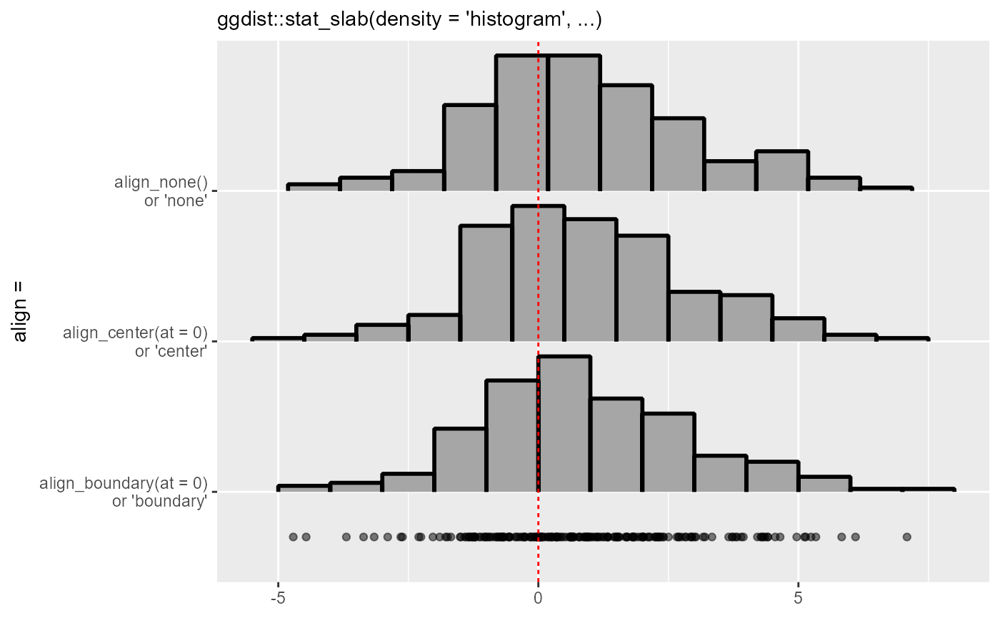

Methods for aligning breaks (bins) in histograms, as used in the align
argument to density_histogram().
Supports automatic partial function application with waived arguments.
Details
These functions take a sorted vector of equally-spaced breaks giving
bin edges and return a numeric offset which, if subtracted from breaks,
will align them as desired:
align_none()performs no alignment (it always returns0).align_boundary()ensures that a bin edge lines up withat.align_center()ensures that a bin center lines up withat.
For align_boundary() (respectively align_center()), if no bin edge (or center) in the
range of breaks would line up with at, it ensures that at is an integer
multiple of the bin width away from a bin edge (or center).
Examples
library(ggplot2)
set.seed(1234)
x = rnorm(200, 1, 2)
# If we manually specify a bin width using breaks_fixed(), the default
# alignment (align_none()) will not align bin edges to any "pretty" numbers.
# Here is a comparison of the three alignment methods on such a histogram:
ggplot(data.frame(x), aes(x)) +
stat_slab(
aes(y = "align_none()\nor 'none'"),
density = "histogram",
breaks = breaks_fixed(width = 1),
outline_bars = TRUE,
# no need to specify align; align_none() is the default
color = "black",
) +
stat_slab(
aes(y = "align_center(at = 0)\nor 'center'"),
density = "histogram",
breaks = breaks_fixed(width = 1),
align = align_center(at = 0), # or align = "center"
outline_bars = TRUE,
color = "black",
) +
stat_slab(
aes(y = "align_boundary(at = 0)\nor 'boundary'"),
density = "histogram",
breaks = breaks_fixed(width = 1),
align = align_boundary(at = 0), # or align = "boundary"
outline_bars = TRUE,
color = "black",
) +
geom_point(aes(y = 0.7), alpha = 0.5) +
labs(
subtitle = "ggdist::stat_slab(density = 'histogram', ...)",
y = "align =",
x = NULL
) +
geom_vline(xintercept = 0, linetype = "22", color = "red")
